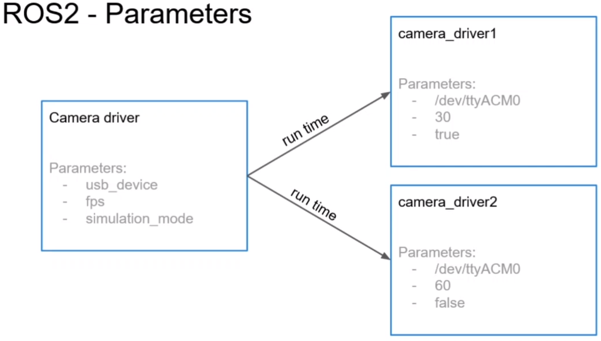
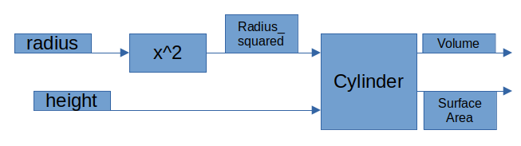

Launch Files & the ROS 2 Toolkit — Start Your Whole Robot with One Command
--params-file in each. A self-driving car runs hundreds of nodes; nobody opens hundreds of terminals. Today one launch file starts, names, wires and configures a whole application, takes arguments (simulation or real car? which robot?), runs many robots side by side with namespaces, and restarts a node that crashes. Then you fill the last gaps of the ROS 2 basics: QoS, ROS_DOMAIN_ID, log levels and ros2 doctor.🗺️ Today's route
6.0The big picture 6.1Launch files, step by step Lab 1Your first launch file Lab 2Rename, remap, parameters, YAML Lab 3Launch arguments & conditions Lab 4Namespaces: many robots at once Lab 5Include launch files Lab 6Robust launch: respawn, timers, events 6.2XML and YAML launch files 6.3Your turn: radio, LED system, car 6.4The ROS 2 toolkit you were missing Lab 7QoS, domains, logs, doctor 6.5When things go wrong 6.6Exit ticket & homework6.0The big picture: from ten terminals to one start button
Lectures 3 to 5 gave you the pieces: nodes that talk (topics, services, actions), in your own words (interfaces), with your own settings (parameters). Today is about starting all of it, the way every real robot does. Six small steps first, no code.
See it: by hand, with a launch file, with arguments
- What you did in Lectures 2–5
- Fine for 1–3 nodes while learning
- Impossible for a real robot (Nav2: ~15 nodes)
- A Python file in a bringup package
- Each
Node(…)= oneros2 run - Names, remaps, parameters, YAML files: all inside
- Arguments:
name:=valueon the command line - Includes: big launch files are made of small ones
- Namespaces: the same launch file for robot 1, 2, 3…
A real robot: how the self-driving car is started
Look at the car from Lectures 4 and 5 once more. Every sensor and every software block is a node, with its own parameter file. Real self-driving software is started with one command, from a launch file that includes one launch file per subsystem.

use_sim:=false vehicle:=car1"] --> S["📄 sensors.launch.py"] T --> P["📄 perception.launch.py"] T --> PL["📄 planning.launch.py"] T --> C["📄 control.launch.py"] S --> S1(["lidar_driver"]) & S2(["camera_driver"]) & S3(["gps_driver"]) P --> P1(["object_detector"]) & P2(["tracker"]) PL --> PL1(["route_planner"]) & PL2(["adaptive_cruise"]) C --> C1(["steering_controller"]) & C2(["speed_limiter"])
ros2 launch autoware_launch autoware.launch.xml- includes sensing, localization, perception, planning, control
- arguments:
map_path,vehicle_model,sensor_model
ros2 launch nav2_bringup bringup_launch.py- arguments:
map:=,params_file:=,use_sim_time:=,namespace:= - one YAML file with hundreds of parameters
- L1:
ros2 launch limo_gazebosim limo_gazebo_diff.launch.py - L9:
display.launch.py model:=…(an argument!) - L14: one
ROS_DOMAIN_IDper team keeps the LIMOs apart (section 6.4 today)
A launch file is documentation that runs. It records exactly which nodes, names, topic connections and parameter files make up the robot, so a teammate, a test server or the robot itself at boot can start the identical system. Every ROS 2 robot you will ever meet has a *_bringup package.
Feel the difference: launch a car, crash a node, change the arguments
This is the launch file you will be able to write by the end of today. Launch it, read the real launch output in the log, then play with its arguments and options.
Compare: by hand vs one launch file
By hand: ros2 run 😩 | Launch file: ros2 launch 🚀 | |
|---|---|---|
| Start N nodes | N terminals, N commands | 1 terminal, 1 command |
| Stop them | Ctrl+C N times | Ctrl+C once |
| Names, remaps, parameters | typed every time: --ros-args -r … -p … | written once: name=, remappings=, parameters= |
| Variations (sim / real, robot 1 / 2) | remember different commands | arguments: use_sim:=true, namespace:=robot2 |
| A node crashes | you notice (maybe) and restart it | respawn=True restarts it |
| Start order | you wait and type | TimerAction, event handlers |
| Share with the team | a list of commands in a README | a file in Git, in the bringup package |
| Self-driving car example | impossible: hundreds of nodes | ros2 launch autoware_launch autoware.launch.xml |
Choose: which launch feature do I need?
Lab 1"] Q0 -- "rename / rewire / configure" --> R["🔀 name= · remappings= · parameters=
Lab 2"] Q0 -- "choose at start time
(sim or real, a number, a file)" --> A["🎚️ DeclareLaunchArgument
+ LaunchConfiguration · IfCondition
Lab 3"] Q0 -- "the same nodes for 2+ robots" --> NS["🏷️ namespace= · PushRosNamespace
Lab 4"] Q0 -- "reuse another launch file" --> I["📦 IncludeLaunchDescription
Lab 5"] Q0 -- "survive crashes, start in order" --> E["🛟 respawn · TimerAction · OnProcessExit
Lab 6"]
Check yourself 5 min
Lecture 5 recap: write the command that starts number_publisher publishing 5, four times per second.
Answer
ros2 run my_py_pkg number_publisher --ros-args -p number_to_publish:=5 -p publish_frequency:=4.0. Today the same settings go into a launch file, once.How many terminals, and how many --params-file options, did the battery + LED system need in Lecture 5?
Answer
In the simulator, what changed in ros2 node list when you set the namespace to car2?
Answer
/car2/… (for example /car2/perception), while /gazebo and /rviz2 stayed global. That is how two cars run the same launch file without clashing.Perception crashed. What did respawn=True change?
Answer
respawn_delay (2 s), with a new pid. Without it, the process stays dead and the planner complains that no detections arrive.You ticked "use_sim" while the car was running and nothing happened. Why?
Answer
ros2 launch starts. Stop with Ctrl+C and launch again with the new value.- Call the node
front_lidarinstead oflidar_driver - Choose simulation or the real car when you type the command
- Run the same five nodes for
car1andcar2 - The camera driver sometimes crashes; restart it automatically
- Load
config/planner.yamlinto the planner - Pass the map file name:
map:=campus.yaml - Start the planner only 3 s after the sensors
- Topics should become
/car2/scan,/car2/cmd_vel - Connect
cmd_veltoturtle1/cmd_vel - When the simulator window closes, stop everything
6.1Launch files, step by step
Picture it: the car's start button
A launch file is the start button of a car. You press one button; the car starts the engine, the dashboard, the lights, the cameras and the driver-assist computer, in the right order, with the right settings. You don't start each part by hand.
Or a film director's call sheet. It lists every actor (node), the role they play (name=), who they talk to (remappings=) and their script notes (parameters=). "Action!" (ros2 launch) starts them all; "Cut!" (Ctrl+C) stops them all.



The rules of a launch file
- A launch file is a Python file ending in
.launch.py(XML and YAML also exist: section 6.2). - It must contain a function
generate_launch_description()that returns aLaunchDescription: the list of things to start. - Each
Node(package=…, executable=…)is exactly oneros2 run package executable. - Launch files live in the
launch/folder of a bringup package (my_robot_bringup), which must install that folder. - The bringup package lists every package it starts as an
<exec_depend>inpackage.xml.
Everything you typed after --ros-args has a launch-file twin:
-r __node:=front_lidarname="front_lidar"-r scan:=front/scanremappings=[("scan", "front/scan")]-p max_speed:=50.0parameters=[{"max_speed": 50.0}]--params-file city.yamlparameters=[path_to_city_yaml]-r __ns:=/car1namespace="car1"--log-level debugarguments=["--ros-args", "--log-level", "debug"]Watch it: what ros2 launch does
ros2 launch reads your file, calls generate_launch_description(), and starts one operating-system process per Node, each with its own pid. It collects their output in one terminal and, on Ctrl+C, stops every one of them.
The nodes still find each other by topic names, exactly as when you started them by hand. If the names don't match (a missing remap), the launch file starts everything and nothing talks. rqt_graph is still your best friend.
Try it: build a launch file
Remember it: tap a card to check yourself
ros2 launch pkg file.launch.py.LaunchDescription.ros2 run = one process.my_robot_bringup.name:=value after the launch file name. Declared with DeclareLaunchArgument.number → /robot1/number.IncludeLaunchDescription: start another launch file from yours.✅ You have the idea. Now build it: Lab 1 creates the bringup package, Lab 2 configures nodes and loads YAML, Lab 3 adds arguments, Lab 4 runs two robots, Lab 5 includes launch files, Lab 6 makes it all crash-proof.
L1Lab 1 — Your first launch file
my_robot_bringup + number_app.launch.py
Goal: ros2 launch my_robot_bringup number_app.launch.py starts number_publisher and number_counter (Lectures 3–5) from one terminal.
By convention, launch files live in a package called <robot>_bringup. Like the interfaces package, it is a CMake package with no code: only launch/ and, later, config/.
cd ~/ros2_ws/src
ros2 pkg create my_robot_bringup
cd my_robot_bringup
rm -rf include/ src/
mkdir launch
lsCMakeLists.txt launch package.xml
cmake_minimum_required(VERSION 3.8)
project(my_robot_bringup)
find_package(ament_cmake REQUIRED)
install(DIRECTORY
launch
DESTINATION share/${PROJECT_NAME}
)
ament_package() <exec_depend>my_py_pkg</exec_depend>install(DIRECTORY launch …) copies the folder to install/my_robot_bringup/share/my_robot_bringup/launch; that is where ros2 launch looks. exec_depend says "to run me you need my_py_pkg".
cd ~/ros2_ws/src/my_robot_bringup/launch
touch number_app.launch.pyfrom launch import LaunchDescription
from launch_ros.actions import Node
def generate_launch_description():
ld = LaunchDescription()
number_publisher_node = Node(
package="my_py_pkg",
executable="number_publisher",
)
number_counter_node = Node(
package="my_py_pkg",
executable="number_counter",
)
ld.add_action(number_publisher_node)
ld.add_action(number_counter_node)
return ldcd ~/ros2_ws
colcon build --packages-select my_robot_bringup --symlink-install
source ~/.bashrc
ros2 launch my_robot_bringup number_app.launch.py[INFO] [launch]: All log files can be found below /home/student/.ros/log/… [INFO] [launch]: Default logging verbosity is set to INFO [INFO] [number_publisher-1]: process started with pid [5120] [INFO] [number_counter-2]: process started with pid [5122] [number_publisher-1] [INFO] [1730800000.123] [number_publisher]: Number publisher has been started [number_counter-2] [INFO] [1730800000.130] [number_counter]: Number Counter has been started
ros2 node list
ros2 topic echo /number_countEvery output line is prefixed with [executable-N], so you can tell the nodes apart. One command, two nodes. Ctrl+C in Terminal 1 stops all of them.
With --symlink-install, the installed launch file is a link to your source file: editing it needs no rebuild. A new launch file still needs one build, so it gets installed.
ros2 launch my_robot_bringup number_app.launch.py --show-args
ros2 launch my_robot_bringup number_app.launch.py --print # the full description, without starting anythingToday the answer to --show-args is "No arguments". After Lab 3 it lists every argument with its default and description. Try it on a launch file you already know: ros2 launch turtlesim multisim.launch.py --show-args.
ros2 pkg create my_robot_bringup- Delete
include/andsrc/; createlaunch/ - Add
install(DIRECTORY launch …)toCMakeLists.txt - Add
<exec_depend>my_py_pkg</exec_depend>topackage.xml - Write
launch/number_app.launch.py colcon build --packages-select my_robot_bringup --symlink-installsource ~/.bashrcros2 launch my_robot_bringup number_app.launch.py
L2Lab 2 — Rename, remap, parameters and YAML files
Everything you did with --ros-args, now in Python
Goal: the number app starts with new node names, a new topic name and its own parameters, first written in the launch file, then loaded from a YAML file that is installed with the package.
from launch import LaunchDescription
from launch_ros.actions import Node
def generate_launch_description():
ld = LaunchDescription()
remap_number_topic = ("number", "my_number")
number_publisher_node = Node(
package="my_py_pkg",
executable="number_publisher",
name="my_number_publisher",
remappings=[remap_number_topic],
parameters=[{"number_to_publish": 4,
"publish_frequency": 5.0}],
)
number_counter_node = Node(
package="my_py_pkg",
executable="number_counter",
name="my_number_counter",
remappings=[remap_number_topic,
("number_count", "my_number_count")],
)
ld.add_action(number_publisher_node)
ld.add_action(number_counter_node)
return ldros2 launch my_robot_bringup number_app.launch.py
ros2 node list
ros2 topic list
ros2 topic hz /my_number
ros2 param get /my_number_publisher number_to_publish/my_number_counter /my_number_publisher ... /my_number /my_number_count ... average rate: 5.000 ... Integer value is: 4
In Lecture 5 your YAML files lived in ~/ros2_ws/params, so they only worked on your laptop. Real packages keep them in a config/ folder and install it, exactly like launch/.
mkdir ~/ros2_ws/src/my_robot_bringup/config
touch ~/ros2_ws/src/my_robot_bringup/config/number_app.yaml/my_number_publisher: # the NEW node name, from name=
ros__parameters:
number_to_publish: 7
publish_frequency: 4.0install(DIRECTORY
launch
config
DESTINATION share/${PROJECT_NAME}
)import os
from ament_index_python.packages import get_package_share_directory
from launch import LaunchDescription
from launch_ros.actions import Node
def generate_launch_description():
ld = LaunchDescription()
param_config = os.path.join(
get_package_share_directory("my_robot_bringup"), "config", "number_app.yaml")
number_publisher_node = Node(
package="my_py_pkg",
executable="number_publisher",
name="my_number_publisher",
remappings=[("number", "my_number")],
parameters=[param_config],
)
...cd ~/ros2_ws && colcon build --packages-select my_robot_bringup --symlink-install && source ~/.bashrc
ros2 launch my_robot_bringup number_app.launch.py
ros2 topic echo /my_number # data: 7You renamed the node with name="my_number_publisher", so the YAML block must be /my_number_publisher:. With the old key /number_publisher: the file loads without any error and the node silently uses its defaults. To match every node, use the wildcard /**: as the key; you'll need it with namespaces in Lab 4.
L3Lab 3 — Launch arguments & conditions
Choose the settings when you type the command
Goal: ros2 launch my_robot_bringup number_app_args.launch.py number:=9 frequency:=3.0 graph:=true publishes 9, three times per second, and also opens rqt_graph. With no arguments it uses sensible defaults.
In Lab 2 the values were written inside the launch file. A self-driving car's launch file must work for the simulator and the real car, for the city and the motorway, without being edited. Launch arguments are the parameters of a launch file: name:=value after the file name, exactly like model:=… in Lecture 9.
| Parameter (Lecture 5) | Launch argument (today) | |
|---|---|---|
| Belongs to | one node | one launch file |
| Set with | -p name:=value | ros2 launch pkg file.launch.py name:=value |
| Declared with | declare_parameter | DeclareLaunchArgument |
| Read with | get_parameter().value | LaunchConfiguration("name") |
| Typical use | change a node's behaviour | pass values on to parameters, choose which nodes start |
touch ~/ros2_ws/src/my_robot_bringup/launch/number_app_args.launch.pyfrom launch import LaunchDescription
from launch.actions import DeclareLaunchArgument
from launch.conditions import IfCondition
from launch.substitutions import LaunchConfiguration
from launch_ros.actions import Node
def generate_launch_description():
number_arg = DeclareLaunchArgument(
"number", default_value="2",
description="The number to publish")
frequency_arg = DeclareLaunchArgument(
"frequency", default_value="1.0",
description="Messages per second (a float: 2.0, not 2)")
graph_arg = DeclareLaunchArgument(
"graph", default_value="false",
description="Also open rqt_graph (true/false)")
number_publisher_node = Node(
package="my_py_pkg",
executable="number_publisher",
parameters=[{"number_to_publish": LaunchConfiguration("number"),
"publish_frequency": LaunchConfiguration("frequency")}],
)
number_counter_node = Node(package="my_py_pkg", executable="number_counter")
rqt_graph_node = Node(
package="rqt_graph",
executable="rqt_graph",
condition=IfCondition(LaunchConfiguration("graph")),
)
return LaunchDescription([
number_arg, frequency_arg, graph_arg,
number_publisher_node, number_counter_node, rqt_graph_node,
]) <exec_depend>my_py_pkg</exec_depend>
<exec_depend>rqt_graph</exec_depend>cd ~/ros2_ws && colcon build --packages-select my_robot_bringup --symlink-install && source ~/.bashrc
ros2 launch my_robot_bringup number_app_args.launch.py --show-argsArguments (pass arguments as '<name>:=<value>'):
'number':
The number to publish
(default: '2')
'frequency':
Messages per second (a float: 2.0, not 2)
(default: '1.0')
'graph':
Also open rqt_graph (true/false)
(default: 'false')ros2 launch my_robot_bringup number_app_args.launch.py number:=9 frequency:=3.0 graph:=true
ros2 topic hz /number # ≈ 3
ros2 topic echo /number # data: 9Now break it on purpose: frequency:=3. The text 3 is read as an integer, but the node declared a float, so it stops with InvalidParameterTypeException. Same rule as Lecture 5: write 3.0.
Pattern 1: use_sim_time. In simulation, every node must follow Gazebo's clock instead of the computer's. One argument passes the same value to every node. You'll see this in every LIMO launch file from Lecture 8.
use_sim_time = LaunchConfiguration("use_sim_time")
DeclareLaunchArgument("use_sim_time", default_value="false"),
Node(package="robot_state_publisher", executable="robot_state_publisher",
parameters=[{"use_sim_time": use_sim_time}]),
Node(package="slam_toolbox", executable="async_slam_toolbox_node",
parameters=[{"use_sim_time": use_sim_time}]),Pattern 2: choose the YAML file. The city/motorway car from Lecture 5, chosen at launch: ros2 launch my_car cruise.launch.py profile:=motorway.
from launch.substitutions import LaunchConfiguration, PathJoinSubstitution
from launch_ros.substitutions import FindPackageShare
profile = LaunchConfiguration("profile") # city | motorway | track
params_file = PathJoinSubstitution([
FindPackageShare("my_car"), "config", [profile, ".yaml"]]) # …/config/motorway.yaml
DeclareLaunchArgument("profile", default_value="city"),
Node(package="my_car", executable="adaptive_cruise", parameters=[params_file]),IfCondition(PythonExpression([LaunchConfiguration("number"), " > 5"])) starts a node only if the number is bigger than 5. PythonExpression joins the pieces into Python code and evaluates it at launch time. Use it sparingly: simple true/false arguments are easier to read.
L4Lab 4 — Namespaces: many robots at once
Two robots, one launch file, no clashes
Goal: two copies of the number app run at the same time, as /robot1/… and /robot2/…, without seeing each other. Then two turtlesim windows, where one turtle copies the other.
Start number_publisher twice and both publish on /number: the counters can't tell the robots apart. A namespace puts a prefix in front of every relative name in a node: its topics, its services, and the node's own name.
| In the code | Kind | Namespace robot1 makes it | Self-driving example |
|---|---|---|---|
"number" | relative | /robot1/number | "scan" → /car1/scan |
"/number" | absolute (starts with /) | /number: unchanged! | "/traffic_lights": shared by all cars |
"~/status" | private (~ = the node) | /robot1/number_publisher/status | /car1/lidar_driver/status |
node number_publisher | node name | /robot1/number_publisher | /car1/planner |
Since Lecture 3 you wrote create_publisher(Int64, "number", 10), without a /. That is exactly why your nodes can be put in a namespace. A node that publishes on "/number" ignores namespaces and every robot would publish on the same topic.
ros2 run my_py_pkg number_publisher --ros-args -r __ns:=/robot1
ros2 run my_py_pkg number_publisher --ros-args -r __ns:=/robot2 -p number_to_publish:=5
ros2 node list && ros2 topic list/robot1/number_publisher /robot2/number_publisher /parameter_events /robot1/number /robot2/number /rosout
from launch import LaunchDescription
from launch_ros.actions import Node
def generate_launch_description():
ld = LaunchDescription()
for ns, number in [("robot1", 1), ("robot2", 2)]:
ld.add_action(Node(package="my_py_pkg", executable="number_publisher",
namespace=ns,
parameters=[{"number_to_publish": number}]))
ld.add_action(Node(package="my_py_pkg", executable="number_counter",
namespace=ns))
return ldcd ~/ros2_ws && colcon build --packages-select my_robot_bringup --symlink-install && source ~/.bashrc
ros2 launch my_robot_bringup two_robots.launch.py
ros2 topic echo /robot1/number_count # counts in 1s
ros2 topic echo /robot2/number_count # counts in 2s
ros2 service call /robot2/reset_counter example_interfaces/srv/SetBool "{data: true}"
rqt_graphTwo separate islands in rqt_graph, and the Lecture 4 service reset_counter exists twice: you reset only robot 2. No line of node code changed.
GroupAction + PushRosNamespaceWriting namespace= on every node of a car is repetitive and easy to forget. Group the nodes and push the namespace once:
from launch import LaunchDescription
from launch.actions import GroupAction
from launch_ros.actions import Node, PushRosNamespace
def robot(ns, number):
return GroupAction([
PushRosNamespace(ns),
Node(package="my_py_pkg", executable="number_publisher",
parameters=[{"number_to_publish": number}]),
Node(package="my_py_pkg", executable="number_counter"),
])
def generate_launch_description():
return LaunchDescription([robot("robot1", 1), robot("robot2", 2), robot("robot3", 3)])/** wildcardWith a namespace, the node's full name is /robot1/number_publisher, so a YAML key /number_publisher: no longer matches. Either write the full name, or match any namespace with /**:
/**/number_publisher: # this node, in any namespace
ros__parameters:
publish_frequency: 2.0
/robot3/number_publisher: # only robot 3
ros__parameters:
number_to_publish: 30
/**: # every node
ros__parameters:
use_sim_time: falseFrom the official ROS 2 tutorial: two turtlesims in their own namespaces, and turtlesim's mimic node, which reads one turtle's pose and sends velocity commands to the other. Only remaps connect them.
from launch import LaunchDescription
from launch_ros.actions import Node
def generate_launch_description():
return LaunchDescription([
Node(package="turtlesim", executable="turtlesim_node",
namespace="turtlesim1", name="sim"),
Node(package="turtlesim", executable="turtlesim_node",
namespace="turtlesim2", name="sim"),
Node(package="turtlesim", executable="mimic", name="mimic",
remappings=[("/input/pose", "/turtlesim1/turtle1/pose"),
("/output/cmd_vel", "/turtlesim2/turtle1/cmd_vel")]),
])<exec_depend>turtlesim</exec_depend>, build once)ros2 launch my_robot_bringup turtlesim_mimic.launch.py
ros2 topic pub -r 1 /turtlesim1/turtle1/cmd_vel geometry_msgs/msg/Twist \
"{linear: {x: 2.0}, angular: {z: -1.8}}"You drive only turtle 1, and both turtles draw the same circle. Both windows hold a node called sim: allowed, because their full names differ (/turtlesim1/sim, /turtlesim2/sim). This is platooning, the self-driving truck convoy idea, in two windows.
L5Lab 5 — Include launch files
Big launch files are made of small ones
Goal: fleet.launch.py reuses number_app_args.launch.py from Lab 3 for two robots, with different arguments, and also includes turtlesim's own launch file.
from launch import LaunchDescription
from launch.actions import GroupAction, IncludeLaunchDescription
from launch.launch_description_sources import PythonLaunchDescriptionSource
from launch.substitutions import PathJoinSubstitution
from launch_ros.actions import PushRosNamespace
from launch_ros.substitutions import FindPackageShare
def generate_launch_description():
number_app = PathJoinSubstitution([
FindPackageShare("my_robot_bringup"), "launch", "number_app_args.launch.py"])
def robot(ns, number):
return GroupAction([
PushRosNamespace(ns),
IncludeLaunchDescription(
PythonLaunchDescriptionSource([number_app]),
launch_arguments={"number": str(number),
"frequency": "2.0"}.items(),
),
])
return LaunchDescription([robot("robot1", 1), robot("robot2", 2)])ros2 launch my_robot_bringup fleet.launch.py
ros2 node list
ros2 topic echo /robot2/number/robot1/number_counter /robot1/number_publisher /robot2/number_counter /robot2/number_publisher ... data: 2
Turtlesim ships its own multisim.launch.py (two turtlesims in namespaces). Add it to the fleet with three lines:
IncludeLaunchDescription(PythonLaunchDescriptionSource([
PathJoinSubstitution([FindPackageShare("turtlesim"), "launch", "multisim.launch.py"])])),This is how the LIMO simulation launch file starts Gazebo (it includes Gazebo's launch file), and how nav2_bringup includes localization and navigation. In --print output you can see the whole tree.
number:=1"] F --> G2["GroupAction /robot2"] --> I2["📄 number_app_args.launch.py
number:=2"] F --> M["📄 turtlesim/multisim.launch.py"] I1 --> N1(["/robot1/number_publisher"]) & N2(["/robot1/number_counter"]) I2 --> N3(["/robot2/number_publisher"]) & N4(["/robot2/number_counter"]) M --> T1(["/turtlesim1/turtlesim"]) & T2(["/turtlesim2/turtlesim"])
L6Lab 6 — Robust launch: output, respawn, timers, events
A launch file that survives crashes and starts things in order
Goal: one launch file where the counter starts 3 s late, restarts itself when killed, a second turtle is spawned as soon as turtlesim is up, and closing the turtlesim window stops everything.
from launch import LaunchDescription
from launch.actions import (EmitEvent, ExecuteProcess, LogInfo,
RegisterEventHandler, TimerAction)
from launch.event_handlers import OnProcessExit, OnProcessStart
from launch.events import Shutdown
from launch_ros.actions import Node
def generate_launch_description():
turtlesim_node = Node(package="turtlesim", executable="turtlesim_node")
spawn_turtle2 = ExecuteProcess(
cmd=["ros2", "service", "call", "/spawn", "turtlesim/srv/Spawn",
"{x: 2.0, y: 2.0, theta: 0.0, name: 'turtle2'}"],
output="screen")
number_publisher_node = Node(package="my_py_pkg", executable="number_publisher",
output="screen")
number_counter_node = Node(package="my_py_pkg", executable="number_counter",
output="screen", respawn=True, respawn_delay=2.0)
return LaunchDescription([
turtlesim_node,
number_publisher_node,
TimerAction(period=3.0, actions=[number_counter_node]),
RegisterEventHandler(OnProcessStart(
target_action=turtlesim_node, on_start=[spawn_turtle2])),
RegisterEventHandler(OnProcessExit(
target_action=turtlesim_node,
on_exit=[LogInfo(msg="turtlesim closed: stopping everything"),
EmitEvent(event=Shutdown(reason="turtlesim window closed"))])),
])cd ~/ros2_ws && colcon build --packages-select my_robot_bringup --symlink-install && source ~/.bashrc
ros2 launch my_robot_bringup robust_app.launch.py- Timer: watch the log:
number_counter-…: process startedappears about 3 s after the others. - Event on start: a second turtle appears at (2, 2).
- Respawn: in Terminal 2, kill the counter:
pkill -f number_counter. Terminal 1 showsprocess has died … exit code -15, then 2 s laterprocess started with pid […]with a new pid. The count restarts from 0: a restarted node has lost its memory. - Event on exit: close the turtlesim window. Everything stops with
turtlesim closed: stopping everything.
[ERROR] [number_counter-3]: process has died [pid 6150, exit code -15, cmd '…/number_counter --ros-args']. [INFO] [number_counter-3]: process started with pid [6188]
A node that keeps crashing will be restarted forever. Read the error in the log and fix the cause. On a car, a perception node that restarts loses a few seconds of detections, so the planner must handle "no data" safely (the simulator in 6.0 brakes).
Show debug messages of one node only (more about levels in section 6.4):
Node(package="my_py_pkg", executable="number_counter",
arguments=["--ros-args", "--log-level", "debug"])6.2XML and YAML launch files
ROS 2 understands launch files in three languages. They do the same job. Python is the most powerful (loops, functions, any logic); XML is shorter for simple files and is used by large projects like Autoware; YAML is the most compact. You will meet all three in other people's packages, so learn to read them.
<launch>
<arg name="number" default="2"/>
<node pkg="my_py_pkg" exec="number_publisher"
name="my_number_publisher">
<param name="number_to_publish" value="$(var number)"/>
<remap from="number" to="my_number"/>
</node>
<node pkg="my_py_pkg" exec="number_counter"
name="my_number_counter">
<remap from="number" to="my_number"/>
</node>
</launch>launch:
- arg:
name: "number"
default: "2"
- node:
pkg: "my_py_pkg"
exec: "number_publisher"
name: "my_number_publisher"
param:
- name: "number_to_publish"
value: "$(var number)"
remap:
- from: "number"
to: "my_number"
- node:
pkg: "my_py_pkg"
exec: "number_counter"
name: "my_number_counter"
remap:
- from: "number"
to: "my_number"ros2 launch my_robot_bringup number_app.launch.xml number:=5
ros2 launch my_robot_bringup number_app.launch.yaml number:=6| Python | XML | YAML |
|---|---|---|
Node(package=…, executable=…) | <node pkg="…" exec="…"/> | - node: {pkg: …, exec: …} |
DeclareLaunchArgument("n", default_value="2") | <arg name="n" default="2"/> | - arg: {name: "n", default: "2"} |
LaunchConfiguration("n") | $(var n) | |
FindPackageShare("pkg") | $(find-pkg-share pkg) | |
parameters=[path] | <param from="$(find-pkg-share pkg)/config/a.yaml"/> | param: [{from: "…/a.yaml"}] |
GroupAction([PushRosNamespace("r1"), …]) | <group><push-ros-namespace namespace="r1"/>…</group> | - group: {…} |
IncludeLaunchDescription(…) | <include file="$(find-pkg-share turtlesim)/launch/multisim.launch.py"/> | - include: {file: "…"} |
condition=IfCondition(…) | if="$(var graph)" | if: "$(var graph)" |
In this course: Python, because you can use loops (the radio's five stations) and functions (one robot per namespace). An XML file can include a Python one and the other way round (XMLLaunchDescriptionSource from launch_xml.launch_description_sources, or AnyLaunchDescriptionSource for any format), so teams mix them freely.
6.3Your turn: radio, LED system, speed zones
The radio network

Write radio.launch.py that starts 5 robot_news_station nodes and 1 smartphone. Robot names: Giskard, BB8, Daneel, Jander, C3PO. Each station has a different node name and publishes "Hi, this is <name> …" (its robot_name parameter from Lecture 5). The smartphone receives all of them. You don't change any node, you only write one launch file.
Hint
for loop over the names and ld.add_action(...) each Node. New launch file means you must rebuild once.Solution
from launch import LaunchDescription
from launch_ros.actions import Node
def generate_launch_description():
ld = LaunchDescription()
robot_names = ["Giskard", "BB8", "Daneel", "Jander", "C3PO"]
for name in robot_names:
ld.add_action(Node(
package="my_py_pkg",
executable="robot_news_station",
name="robot_news_station_" + name.lower(),
parameters=[{"robot_name": name}],
))
ld.add_action(Node(package="my_py_pkg", executable="smartphone"))
return ldcd ~/ros2_ws && colcon build --packages-select my_robot_bringup --symlink-install && source ~/.bashrc
ros2 launch my_robot_bringup radio.launch.py
rqt_graph # second terminal: compare with the diagram aboveOne command for the battery + LED system
In Lecture 5 (Activity 5.2) you started led_panel and battery in two terminals, each with --params-file ~/ros2_ws/params/led_system.yaml. Write led_system.launch.py that starts both with that file, from one command. Move the YAML file into my_robot_bringup/config/ so it is installed with the package (Lab 2, step 3).
Hint
config/ (already installed since Lab 2). In the launch file, find it with get_package_share_directory("my_robot_bringup") and pass the path: parameters=[param_file].Solution
cp ~/ros2_ws/params/led_system.yaml ~/ros2_ws/src/my_robot_bringup/config/import os
from ament_index_python.packages import get_package_share_directory
from launch import LaunchDescription
from launch_ros.actions import Node
def generate_launch_description():
param_file = os.path.join(
get_package_share_directory("my_robot_bringup"), "config", "led_system.yaml")
return LaunchDescription([
Node(package="my_py_pkg", executable="led_panel", parameters=[param_file]),
Node(package="my_py_pkg", executable="battery", parameters=[param_file]),
])cd ~/ros2_ws && colcon build --packages-select my_robot_bringup --symlink-install && source ~/.bashrc
ros2 launch my_robot_bringup led_system.launch.py
ros2 topic echo /led_statesEach node takes its own block from the shared file (/led_panel:, /battery:), exactly as in Lecture 5. Nav2 on the LIMO (Lecture 13) is started the same way: one launch file, one big YAML file.
Speed zones: school, city, motorway
Reuse the speed_limiter from Lecture 5 (Challenge 5.3). Write speed_zone.launch.py with one argument zone (school, city or motorway, default school) that starts turtlesim and the speed limiter with the YAML file config/zone_<zone>.yaml. School: max_speed 0.5, city: 1.5, motorway: 4.0. Drive with the keyboard through the limiter.
Hint
PathJoinSubstitution([FindPackageShare("my_robot_bringup"), "config", ["zone_", zone, ".yaml"]]). The teleop needs the keyboard, so run it in its own terminal and remap its output to cmd_vel_raw.Solution
/speed_limiter:
ros__parameters:
max_speed: 0.5
max_turn: 1.0from launch import LaunchDescription
from launch.actions import DeclareLaunchArgument
from launch.substitutions import LaunchConfiguration, PathJoinSubstitution
from launch_ros.actions import Node
from launch_ros.substitutions import FindPackageShare
def generate_launch_description():
zone = LaunchConfiguration("zone")
zone_file = PathJoinSubstitution([
FindPackageShare("my_robot_bringup"), "config", ["zone_", zone, ".yaml"]])
return LaunchDescription([
DeclareLaunchArgument("zone", default_value="school",
description="school | city | motorway"),
Node(package="turtlesim", executable="turtlesim_node"),
Node(package="my_py_pkg", executable="speed_limiter", parameters=[zone_file]),
])ros2 launch my_robot_bringup speed_zone.launch.py zone:=motorway
ros2 run turtlesim turtle_teleop_key --ros-args -r turtle1/cmd_vel:=cmd_vel_rawLaunch again with zone:=school: the same key now crawls. Because the limiter has a parameter callback, ros2 param set /speed_limiter max_speed 0.2 still works live: the launch file sets the start values, the callback handles changes.
The cylinder calculator

Build a 3-node system that calculates the volume and surface area of a cylinder:
Volume = π · r² · h Surface area = 2 · π · r · (r + h)
(asks the user)"]) --> R[["/radius"]] & H[["/height"]] R --> SQ(["radius_squarer"]) --> R2[["/radius_squared"]] R --> C(["cylinder_calc"]) H --> C R2 --> C C --> CY[["/cylinder
Cylinder.msg"]]
cylinder_input: asks the user for r and h (Pythoninput()), then publishes them asstd_msgs/msg/Float64on/radiusand/heightevery 0.1 s.radius_squarer: subscribes to/radiusand publishes r² on/radius_squared.cylinder_calc: subscribes to all three topics. When it has all three values, it publishes a custommy_robot_interfaces/msg/Cylinder(float64 volume,float64 surface_area) on/cylinder.- A launch file
cylinder.launch.pythat startsradius_squarerandcylinder_calc. Runcylinder_inputin its own terminal, because it needs the keyboard. Bonus: an argumentnsthat puts both nodes in a namespace.
Solution: cylinder_calc.py (the other two nodes follow patterns you already know)
#!/usr/bin/env python3
from math import pi
import rclpy
from rclpy.node import Node
from std_msgs.msg import Float64
from my_robot_interfaces.msg import Cylinder
class CylinderCalcNode(Node):
def __init__(self):
super().__init__("cylinder_calc")
self.radius_ = None
self.radius_squared_ = None
self.height_ = None
self.create_subscription(Float64, "radius", self.callback_radius, 10)
self.create_subscription(Float64, "radius_squared", self.callback_radius_squared, 10)
self.create_subscription(Float64, "height", self.callback_height, 10)
self.cylinder_pub_ = self.create_publisher(Cylinder, "cylinder", 10)
def callback_radius(self, msg):
self.radius_ = msg.data
self.calculate()
def callback_radius_squared(self, msg):
self.radius_squared_ = msg.data
self.calculate()
def callback_height(self, msg):
self.height_ = msg.data
self.calculate()
def calculate(self):
if None in (self.radius_, self.radius_squared_, self.height_):
return # wait until we have all three
msg = Cylinder()
msg.volume = pi * self.radius_squared_ * self.height_
msg.surface_area = 2 * pi * (self.radius_ * self.height_ + self.radius_squared_)
self.cylinder_pub_.publish(msg)
def main(args=None):
rclpy.init(args=args)
rclpy.spin(CylinderCalcNode())
rclpy.shutdown()
if __name__ == "__main__":
main()Remember: add "msg/Cylinder.msg" to the interfaces CMakeLists, add <depend>std_msgs</depend> to my_py_pkg/package.xml, and register three executables. Check: with r = 2 and h = 5 you should get volume ≈ 62.83 and surface area ≈ 87.96.
6.4The ROS 2 toolkit you were missing
You can now build and start a complete ROS 2 application. Five things are still missing before you put it on a real robot over Wi-Fi in Part B: how reliably messages travel (QoS), which robots can hear each other (domains), what your nodes are saying (log levels), how to diagnose a broken setup, and two node types you'll meet in Nav2.
QoS: how carefully is each message delivered?
Reliability: live radio or registered mail? A LiDAR sends 10 scans a second. If one is lost over Wi-Fi, resending it is pointless: the next one is already newer. That's best effort, like live radio. A "stop the car" command must arrive, even late: reliable, like registered mail that is re-sent until signed for.
Durability: a shout or a notice board? A map is published once. A node that starts later would miss a shout (volatile). With transient_local the publisher keeps the last message pinned on a notice board, and late joiners read it straight away.
- Every publisher and subscriber has a QoS profile: history (keep the last N), depth (N), reliability, durability (and a few advanced ones: deadline, lifespan, liveliness).
- The
10you have written since Lecture 3 increate_publisher(Int64, "number", 10)is a QoS profile: keep the last 10, reliable, volatile. - The publisher offers, the subscriber requests. If the request is stricter than the offer, they don't connect, with only a warning.
| Publisher offers | Subscriber requests | Result | Self-driving example |
|---|---|---|---|
| reliable | reliable | ✔ connected, lost messages re-sent | /emergency_stop |
| reliable | best_effort | ✔ connected, works as best effort | a dashboard that only wants the latest speed |
| best_effort | best_effort | ✔ connected, losses are not re-sent | /camera/image_raw, /scan |
| best_effort | reliable | ✖ no connection | RViz showing no LiDAR points (Lecture 9 tip!) |
| transient_local | volatile or transient_local | ✔ (only transient_local subscribers get old messages) | /map, the robot description |
| volatile | transient_local | ✖ no connection |
from rclpy.qos import (QoSProfile, ReliabilityPolicy, DurabilityPolicy,
qos_profile_sensor_data)
self.create_subscription(LaserScan, "scan", self.callback_scan, qos_profile_sensor_data)
map_qos = QoSProfile(depth=1,
reliability=ReliabilityPolicy.RELIABLE,
durability=DurabilityPolicy.TRANSIENT_LOCAL)
self.create_subscription(OccupancyGrid, "map", self.callback_map, map_qos)Domains: which robots can hear each other?
ROS 2 finds every node on the same network automatically (the DDS "discovery"). Great for one robot; dangerous in a lab with 15 LIMOs on one Wi-Fi: your ros2 topic pub /cmd_vel would drive every robot. ROS_DOMAIN_ID gives each team its own building; namespaces (Lab 4) are rooms inside one building.
| Setting | What it does | When |
|---|---|---|
export ROS_DOMAIN_ID=7 | Only nodes with the same number see each other. Use 0–101. | Every team in the lab: the number on your LIMO's label (Lecture 14). |
export ROS_LOCALHOST_ONLY=1 | Nodes talk only inside this computer. | Working alone on a shared network, or at home with simulation. |
| Same domain + namespaces | Robots see each other, but their names don't clash. | A fleet that must share data: /car1/pose, /car2/pose. |
| Different domains | Completely separate ROS worlds. | Separate teams, separate robots. |
Put the export in ~/.bashrc and open new terminals. One terminal on domain 0 and another on 7 is the classic "ros2 topic list shows nothing" mystery.
Log levels: make your nodes talk to you, at the right volume
Since Lecture 2 you have used self.get_logger().info(…). There are five levels. Each node shows its level and everything more serious; the default is INFO.
| Level | Python | Self-driving car example |
|---|---|---|
| 🔍 DEBUG | self.get_logger().debug(…) | "frame 1532: 4 objects, 12 ms" (every frame; hidden by default) |
| ℹ️ INFO | .info(…) | "Perception started, model loaded" |
| ⚠️ WARN | .warn(…) | "LiDAR data 200 ms late" |
| ❌ ERROR | .error(…) | "Camera disconnected" |
| 💀 FATAL | .fatal(…) | "Both sensors lost: emergency stop" |
self.get_logger().warn("Battery low", throttle_duration_sec=5.0) # at most once every 5 s
self.get_logger().info("First scan received", once=True) # only the first timeros2 run my_py_pkg number_counter --ros-args --log-level debug # all loggers
ros2 run my_py_pkg number_counter --ros-args --log-level number_counter:=debug # one logger
ros2 run rqt_console rqt_console # every node's messages in one window, filter by level
ros2 topic echo /rosout # the topic all of them are published onYour debug kit: symptom → tool
| Symptom | First tool | What it tells you |
|---|---|---|
| "Is my ROS 2 installation and network OK?" | ros2 doctor · ros2 doctor --report | Checks the setup, network and running topics; the report lists versions, domain id, middleware. |
| A topic exists but nothing arrives | ros2 topic info -v /scan | Every publisher and subscriber with its type and QoS: spot a reliability mismatch. |
| What does this node publish, subscribe, serve? | ros2 node info /planner | All its topics, services, actions in one list. |
| "executable not found" | ros2 pkg executables my_py_pkg | The exact names registered in setup.py. |
| Who is connected to whom? | rqt_graph | The node graph; remap mistakes are obvious. |
| Too many messages to read | rqt_console | Filter by node and level. |
| Build the bringup and everything it needs | colcon build --packages-up-to my_robot_bringup | Builds the package and all its dependencies, in order. |
| A package from GitHub won't build: missing dependencies | rosdep install --from-paths src -y --ignore-src | Installs every dependency listed in the package.xml files. |
Look ahead: two node types you'll meet in Nav2
- States: unconfigured → inactive → active
- Start drivers in a known order; reset without restarting
ros2 lifecycle get /map_server- Every Nav2 server is one (Lecture 13)
- Same nodes, loaded into a container
- Messages passed without copying: great for camera images
ros2 component listComposableNodeContainerin launch files
- Record a drive, debug it at your desk
- Self-driving teams test on recorded data every day
- From a launch file:
ExecuteProcess(cmd=["ros2", "bag", "record", "-a"]) - Hands-on in Lecture 7
Remember it
L7Lab 7 — QoS, domains, logs, doctor
Break it on purpose, then find out why
Goal: see an incompatible-QoS warning, receive a "pinned" message late, hide nodes from each other with a domain, and turn debug messages on and off.
ros2 topic pub -r 2 --qos-reliability best_effort /fake_scan std_msgs/msg/String "{data: 'scan'}"ros2 topic echo --qos-reliability reliable /fake_scan[WARN] [ros2cli_…]: New publisher discovered on topic '/fake_scan', offering incompatible QoS. No messages will be received from it. Last incompatible policy: RELIABILITY
ros2 topic echo --qos-reliability best_effort /fake_scan
ros2 topic info -v /fake_scan # shows Reliability: BEST_EFFORT on the publisherros2 topic pub -r 0.05 --qos-reliability reliable --qos-durability transient_local \
/fake_map std_msgs/msg/String "{data: 'the map'}"ros2 topic echo --qos-durability transient_local --qos-reliability reliable /fake_map # instant
ros2 topic echo --qos-durability volatile --qos-reliability reliable /fake_map # waits up to 20 sThe first echo prints data: the map immediately; the second has to wait for the next publication. That is why RViz shows the map at once in Lecture 12.
export ROS_DOMAIN_ID=5
ros2 run demo_nodes_py talkerros2 run demo_nodes_py listener # domain 0: hears nothing
# Ctrl+C, then:
export ROS_DOMAIN_ID=5
ros2 run demo_nodes_py listener # I heard: [Hello World: …]Bonus with your neighbour (same Wi-Fi, VM network in bridged mode): both use the same domain and run talker / listener on two laptops. Then pick different numbers.
Add two lines to the counter's callback in number_counter.py:
self.get_logger().debug("Counter is now " + str(self.counter_))
if self.counter_ > 20:
self.get_logger().warn("Counter above 20!", throttle_duration_sec=3.0)ros2 launch my_robot_bringup number_app_args.launch.py frequency:=5.0
ros2 run my_py_pkg number_counter --ros-args -r __node:=debug_counter --log-level debug
ros2 run rqt_console rqt_consoleThe launched counter shows only the warning, once every 3 s; the second counter also shows every debug line. In rqt_console, untick Debug and filter by node.
ros2 doctor
ros2 doctor --report | less # distro, middleware, ROS_DOMAIN_ID, network, topicsRun this first whenever "nothing works" on a new computer or robot, and paste its report when you ask for help.
🏅 Level up: choose your challenge
rqt_graph) and Activity 6.2 (the LED system from one command).ros2 topic info -v).car.launch.py with arguments use_sim, rviz and namespace, your own nodes as stand-ins (for example hw_status_publisher renamed to lidar_driver), respawn=True on "perception", a TimerAction on "planner", and an OnProcessExit that shuts everything down when turtlesim (the "simulator") closes. Then launch it twice, as car1 and car2, from one fleet.launch.py.Which function must every Python launch file contain?
ros2 launch calls exactly this function and starts what it returns.You created launch/radio.launch.py, but ros2 launch says the file was not found. Most likely?
--symlink-install spares you rebuilds for edits only.In a launch file, how do you do -r __node:=station_x?
name= renames the node; namespace= adds a prefix.You run ros2 launch my_robot_bringup number_app_args.launch.py frequency:=3 and the node stops with InvalidParameterTypeException. Why?
frequency:=3.0.Why can't you write if LaunchConfiguration("graph") == "true": in a launch file?
LaunchConfiguration is a placeholder (a substitution), not the value.A node publishes on "/cmd_vel" and is started with namespace="car2". Which topic does it use?
/) get the namespace. Write "cmd_vel".What does respawn=True do?
respawn_delay seconds, with a new pid and fresh variables.The LiDAR publishes /scan best effort. Your subscriber uses the default 10 (reliable). What happens?
qos_profile_sensor_data.Two teams' LIMOs react to each other's /cmd_vel. The quickest fix?
Your node's debug messages never appear. Why?
6.5When things go wrong
| You see… | Why | Fix |
|---|---|---|
file 'x.launch.py' was not found in the share directory of package 'my_robot_bringup' | The launch folder isn't installed, or the package wasn't rebuilt after adding the file. | Check install(DIRECTORY launch …); rebuild; source. |
Package 'my_robot_bringup' not found | Not built, or this terminal isn't sourced. | colcon build, then source ~/.bashrc. |
executable 'X' not found on the libexec directory | A typo in executable=, or it's not in setup.py. | ros2 pkg executables my_py_pkg; copy the exact name. |
Caught exception when trying to load file of format [py]: … | A Python error in the launch file (missing import, typo, missing comma). | Read the last line of the message; it names the error and line. |
| Nodes start but don't talk | A remap on one node only, or two namespaces. | rqt_graph; remap every node that uses the topic. |
InvalidParameterTypeException after a launch argument | frequency:=3 became an integer. | Pass 3.0, or use a float default. |
Included launch description missing required argument 'x' | An argument without a default, not passed in launch_arguments or on the command line. | Give it a default_value, or pass it. |
| YAML parameters ignored inside a namespace | The YAML key is /node, but the node is now /robot1/node. | Use /robot1/node: or /**/node:. |
| A node keeps restarting forever | respawn=True on a node that crashes at start. | Read the first process has died error; fix the cause. |
offering incompatible QoS … Last incompatible policy: RELIABILITY | Best-effort publisher, reliable subscriber. | Subscriber: qos_profile_sensor_data. RViz: Reliability "Best Effort". |
ros2 topic list shows only /parameter_events and /rosout | Different ROS_DOMAIN_ID or ROS_LOCALHOST_ONLY in the two terminals. | echo $ROS_DOMAIN_ID in both; set it in ~/.bashrc. |
6.6Exit ticket & homework
Five quick questions (5 min), then today's commands and homework.
Write the Node(...) for robot_news_station named station_x with robot_name = "X".
Answer
Node(package="my_py_pkg", executable="robot_news_station", name="station_x", parameters=[{"robot_name": "X"}])Which two lines in the bringup package make ros2 launch find your launch and YAML files?
Answer
install(DIRECTORY launch config DESTINATION share/${PROJECT_NAME}) in CMakeLists.txt, and in the launch file get_package_share_directory("my_robot_bringup") (or FindPackageShare) to find them.Declare a launch argument use_sim_time (default false) and pass it to a node.
Answer
DeclareLaunchArgument("use_sim_time", default_value="false") and Node(…, parameters=[{"use_sim_time": LaunchConfiguration("use_sim_time")}]).The node publishes "scan". With PushRosNamespace("car1"), what is the full topic name, and what is it with a publisher on "/scan"?
Answer
/car1/scan, and /scan (absolute names are not changed).Which QoS settings suit (a) a camera stream, (b) a map published once, (c) an emergency stop?
Answer
qos_profile_sensor_data). (b) reliable, transient_local. (c) reliable.📋 Today's commands
ros2 launch PKG FILE.launch.py name:=valuestart an application with argumentsros2 launch PKG FILE --show-args · --printlist arguments · show without startingNode(package, executable, name, namespace, remappings, parameters)the launch building blockinstall(DIRECTORY launch config DESTINATION share/${PROJECT_NAME})bringup CMakeLists.txtget_package_share_directory("pkg") · FindPackageShare("pkg")find installed filesDeclareLaunchArgument · LaunchConfigurationdeclare / use an argumentcondition=IfCondition(…) · UnlessConditionstart only if…GroupAction([PushRosNamespace("r1"), …])a whole robot in a namespaceIncludeLaunchDescription(PythonLaunchDescriptionSource(path), launch_arguments=…)reuse a launch filerespawn=True, respawn_delay=2.0 · TimerAction · OnProcessExitrobust start-upExecuteProcess(cmd=[…])run any commandqos_profile_sensor_data · ros2 topic info -vQoS in code · inspect QoSexport ROS_DOMAIN_ID=7 · ROS_LOCALHOST_ONLY=1separate robots / stay local--ros-args --log-level debug · rqt_consolelog levelsros2 doctor --reportcheck the whole setup- Finish Activities 6.1 and 6.2, and Mini-project 6.4 (cylinder) with its launch file.
- Add
export ROS_DOMAIN_ID=<your team number>to~/.bashrc(ask for your number) and check it withros2 doctor --report. - Preview Lecture 7 (Catch Them All): it ends with one launch file that starts turtlesim, a spawner and a controller, all configured by parameters. Draw its node graph on paper before class.
- Make sure
Turtle.msgandTurtleArray.msg(Lecture 5 homework) are built.
- ROS 2 Humble docs: Creating a launch file (the turtlesim mimic example from Lab 4)
- Integrating launch files into ROS 2 packages
- Using substitutions (arguments,
LaunchConfiguration,PythonExpression) - Using event handlers (
OnProcessStart,OnProcessExit) - Managing large projects (includes, namespaces, YAML in launch)
- Launch files in Python, XML and YAML
- About Quality of Service settings
- The ROS_DOMAIN_ID
- Using rqt_console to view logs · Using ros2doctor
- Managed (lifecycle) nodes · About composition
- Autoware's launch package on GitHub: how a real self-driving car is started